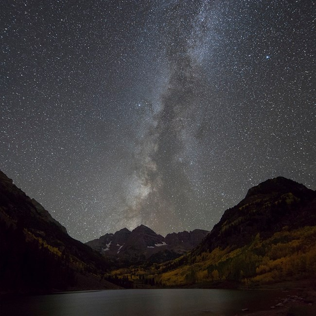

How to Take Professional-Quality Photos of the Stars and Night Sky

Beautiful Nightscape Photography Is All About Technique
The secret to producing beautiful nightscapes isn’t in a wide-angle lens, a high-end telescope, or a new Nikon or Canon DSLR camera—nor is it in post-processing or photo-editing software. These tools may help, but without technique, composition, and the knowledge to use your camera effectively, you won’t get anywhere. Whether you’re a beginner, intermediate, or advanced photographer, it’s important to focus on the fundamentals of good astrophotography. With these tips from the field, you’ll be ready to tackle your bucket-list dreams and shoot for big things—think auroras, eclipses, the deep sky—the possibilities are limitless.
The Essential Night Photography Tool Kit
- Decent low-light camera (shoots in manual, raw, and bulb mode)
- LED headlamp with red or green settings
- Spare batteries
- Tripod
- Remote or external shutter release
- Lens hood for light interference
- Intervalometer (optional)
- Camera filters (optional)
How to Photograph Stars: Tips for Beginner Photographers
Choose a Subject
Once you’ve chosen a photography subject, research moon phases and constellations with apps like Star Walk (for iPhone) or the free Google Sky Map (for Android) which show you the sky view from specific places at any time of the night. A full moon is the most popular of the eight moon phases to photograph, but you may want to shoot under a new moon to capture constellations in great detail.
There are advantages and disadvantages to photographing under each moon phase. Independent of your decision, check the weather and air quality for systems and events that would otherwise obscure your objectives and your subject.
Which Moon or Lunar Phase Is Best for Night Photography?
- New Moon: If you want to photograph the Milky Way or capture fainter stars and starscapes, shoot under a new moon. Downside: the low light increases the noise or aberrant pixels that may occur with common nightscape settings, such as high ISO and a long exposure. Photographing under a new moon as opposed to the bright light of a full moon allows for the dark silhouettes of geologic features to pop out against a starry sky.
- Full Moon: Shooting under a full moon that is low in the sky serves to illuminate the foreground of your scene and drowns out potential light pollution, but this technique isn’t always ideal for celestial photography because it will obscure faint stars.
- Quarter or Crescent Moon: Want the best of both worlds—a detailed foreground and starry skies? Consider shooting with a crescent moon or quarter moon behind you to illuminate the foreground of your scene. If west-facing, shoot in early night (when the moon is low in the eastern sky). If east-facing, shoot in early morning (when the moon is low in the western sky).
Select a Location
For the darkest skies, go 60 to 100 miles from the city lights and get to high elevations. Notice the effect the high altitude and thinner atmosphere have on light refraction: Shooting through fewer light-dispersing particles creates crisper, brighter shots, with greater transparency and contrast.
[Recommended Photograph: An image that compares high elevation, crisp astrophotography to a lower elevation photo with light pollution].
Set Up Your Tripod
As with any night photography, you’ll want to use a tripod. To master it, take a tip from one of the most renowned landscape photographers of all time, Ansel Adams. Adams urged for a methodical use of the tripod. Here’s how:
- Point one leg of the tripod at your subject so you can stand in between the other two legs.
- The central post of the tripod should be vertical and perpendicular; confirm this alignment with a bubble level.
- Acquire an L-bracket instead of a standard mounting plate to keep your camera’s weight evenly centered over the tripod.
Frame Your Scene or Subject
Frame one-third of the horizon against two-thirds of the night sky, and verify this a second time in your camera’s live view. This composition technique is called “the rule of thirds.”
What Is “The Rule of Thirds” in Photography?
Rules are meant to be broken, but “the rule of thirds” is the most essential rule of thumb for basic photography composition. This technique helps to balance and unify an image. Simply divide your view into thirds horizontally and vertically so that you have nine equal sections of the image. Once you’ve established this imaginary grid in your viewfinder, frame points of interest at the intersections (rock features, faraway city scapes). Research shows that people’s eyes most naturally gravitate towards these points of intersection in an image, so use them to your advantage.
Preserve Your Night Vision
Allow your eyes to adjust to the darkness by turning off standard lights for 45 minutes. Need to illuminate the trail or camera controls? Cover one eye when the light is on—the protected eye will stay dark-adapted. If you need a headlamp, use one like Petzl’s Tikka; its red LED won’t affect your night vision.
Why Is It Better to Use Red Light for Night Vision?
The eye is composed of photoreceptors called rods and cones that convert light into electrical signals for your brain to interpret. Rods are responsible for low-light vision and are more numerous than cones; they contain the biologic pigment rhodopsin. When rhodopsin is exposed to bright light, it becomes photobleached. It may take up to 30 minutes to completely regain your night vision. Red light (utilized in many headlamp models) has a longer wavelength and is less disrupting to your vision than light on the other end of the spectrum.